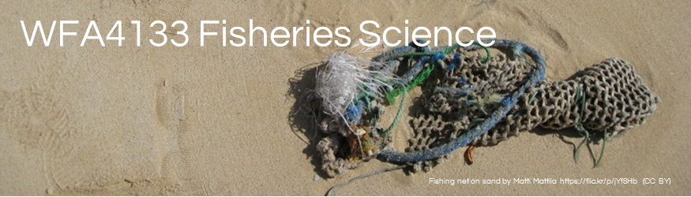

This lab is 3 exercises designed to simulate what a typical fisheries professional is required to do with sampling data, from data entry to preliminary analysis.
For this lab you will be randomly divided into teams that you will remain in for the rest of class and expected to work collaboratively through the class exercises. You may or may not work together to answer the lab question for each exercise. NOTE: Your answers to the questions should be written in your own words. This lab is worth 20 points.
This exercise simulates what you can expect as a practicing fisheries professional. Your team has returned from sampling a small impoundment for largemouth bass and bluegill. Using the datasheets provided perform the following (NOTE: all files are located and should be saved to the folder entitled “Lab 2-> Exercise 1” located on the desktop; this is the folder you unzipped).
Length histograms can reveal clues about a population’s growth and structure. However some of the structure can be obscured by how the histogram is constructed. Let’s explore this.
\(PSD-X=\frac{\text{Number of fish}\ge \text{ specified length}}{\text{Number of fish }\ge \text{ stock length}}\cdot 100\)
\(PSD-X-Y=\frac{\text{Number of fish}\,\text{in bin}}{\text{Number of fish }\ge \text{ stock length}}\cdot 100\)
EXERCISE 1: QUESTIONS (6 POINTS TOTAL)
1.1) What was the binning interval you used to finalize your preliminary length-frequency figure for 2016 and why did you select that interval? (2 points)
1.2) Is there anything about your Largemouth Bass or Bluegill histograms that does not make sense? If so what is it? What could have caused it? (2 points)
1.3) The impoundment is owned by a local muncipality and they would like to know what type of fishery and fishing could be expected. Using PSD-X values calculated for the Largemouth Bass and Bluegill and make a recommendation for a fishery type and why you would suggest that classification. See Table 1.3 in the appendix for PSD values for various Largemouth Bass and Bluegill systems. (2 points)
In the sampling, length-weight data was commonly taken for the first 30 fish processed and then only length data was taken. An allometric equation for the length-weight relationship is then used to estimate the weight for the fish with missing weights. (NOTE: all files are located and should be saved to the folder entitled “Lab 2-> Exercise 2” located on the desktop):
What was the combination of \(a^\prime\) and \(b\) in Table 2.1 that had the lowest sums of squares residuals?
\(a^\prime\):__________ \(b\):__________
The “Length-weight equation estimates” tab provides the actual best fit estimates of \(a^\prime\) and \(b\) (i.e., the estimate that minimizes the sum squared residuals). Record those values below
\(a^\prime\):__________ \(b\):__________
Using the values of \(a^\prime\) and \(b\) for the best fit above and your spreadsheet for exercise 2, estimate the weight values for fish without weights. This is done by typing the allometric scaling equation into your spreadsheet as (=10^(\(a^\prime\))*length^\(b\)). Recall the length weight relationship is \(W=a\cdot L ^b\). Then calculate the mean weight of the sample and record below, making sure to save your spreadsheet once you are done. Use the =average(…) function in excel to calculate average weight.
Mean sample weight: ____________
Suppose there are 10,000 fish in the lake, estimate the biomass in the lake as [mean weight]x[10000]
Total lake biomass:__________
2.1. Was there evidence for isometric (\(b = 3\)) or allometric (\(b \neq 3\)) scaling of weight with length in the largemouth bass population? Given the value of \(b\) for the sample, how would you expect the weight of fish to change with length? Values less than 3 result in a fish getting more fusiform as it gets larger, greater than 3 it becomes more plump. (2 points)
2.2. Do you believe the estimate of total biomass? Do you think it would be reasonable to calculate a 95% confidence interval for the biomass estimate based on the sample variance? (2 points)
2.3. Once weight has been estimated for the entire sample, would it be reasonable to calculate \(W_{r}\) for all the Largemouth Bass in the sample? Why or why not? (2 points)
2.4. This analysis assumes that all fish are captured equally. Would there be an effect of size selective capture which resulted in few, if any, large fish captured? (2 points)
2.5. How does \(a^\prime\) relate to a in the length-weight equation? HINT:how does \(a\) equal \(a^\prime\). (2 points)
A more typical sampling event would require biologists to collect length weight data on all the largemouth bass collected. Your team has returned from sampling a different small impoundment for largemouth bass. Using the datasheet provided perform the following (NOTE: all files are located and should be saved to the folder entitled “Lab 2-> Exercise 3” located on the desktop):
\({{W}_{r}}=\frac{Weigh{{t}_{observed}}}{Weigh{{t}_{s}}}\cdot 100\)
\(W_{r}\): __________
The tab \(W_{r}\) versus length plots \(W_{r}\) values for the same versus fish length. Save the plot to your folder by right clicking on it.
Plotting \(W_{r}\) by length category can also be an effective way of interpreting \(W_{r}\) values. The 5 cells, stock, quality, preferred, memorable, and trophy sizes are commonly used to aggregate \(W_{r}\) values. The tab “Wr boxplot” provides a box of \(W_{r}\) values by length group. Make sure the correct values of \(a^\prime\) and \(b\) for the standard weight equation are in the input boxes.
EXERCISE 3. QUESTIONS (4 POINTS TOTAL)
3.1) How did the best fit line from Exercise 2 and the standard weight line compare to each other? (2 points)
3.2) Do the boxplot help interpretation of \(W_{r}\) compared to the scatterplot of \(W_{r}\) values by fish length? If so, why? (2 points)
Table 1.1. Traditional PSD-X values for Largemouth Bass and Bluegill.
| Species | Length category | Length (mm) | PSD-X | N | PSD value |
|---|---|---|---|---|---|
| Largemouth bass | Stock | 200 | PSD-S | _____ | __________ |
| Quality | 300 | PSD-Q | _____ | __________ | |
| Preferred | 380 | PSD-P | _____ | __________ | |
| Memorable | 510 | PSD-M | _____ | __________ | |
| Trophy | 630 | PSD-T | _____ | __________ | |
| Bluegill | Stock | 80 | PSD-S | _____ | __________ |
| Quality | 150 | PSD-Q | _____ | __________ | |
| Preferred | 200 | PSD-P | _____ | __________ | |
| Memorable | 250 | PSD-M | _____ | __________ | |
| Trophy | 300 | PSD-T | _____ | __________ |
Table 1.2. Incremental PSD-X-Y values for Largemouth Bass and Bluegill.
| Species | Length category | Length (mm) | PSD-X-Y | N | PSD Value |
|---|---|---|---|---|---|
| Largemouth bass | Stock | 200 | PSD-S-Q | _____ | __________ |
| Quality | 300 | PSD-Q-P | _____ | __________ | |
| Preferred | 380 | PSD-P-M | _____ | __________ | |
| Memorable | 510 | PSD-M-T | _____ | __________ | |
| Trophy | 630 | PSD-T | _____ | __________ | |
| Bluegill | Stock | 80 | PSD-S-Q | _____ | __________ |
| Quality | 150 | PSD-Q-P | _____ | __________ | |
| Preferred | 200 | PSD-P-M | _____ | __________ | |
| Memorable | 250 | PSD-M-T | _____ | __________ | |
| Trophy | 300 | PSD-T | _____ | __________ |
Table 1.3. PSD values for various fishery types.
Table 2.1. Combinations of \(a^\prime\) and \(b\) to predict weight from length data for Largemouth Bass. Record values to the nearest decimal point
| \(a^\prime\) | \(b\) | Sums of squares residuals |
|---|---|---|
| -5 | 3 | ____________________ |
| -5 | 2.9 | ____________________ |
| -5 | 3.1 | ____________________ |
| -4.5 | 3 | ____________________ |
| -5 | 3 | ____________________ |
| -5.2 | 3 | ____________________ |
| __________ | __________ | ____________________ |
| __________ | __________ | ____________________ |
| -5 | -3.09 | ____________________ |